Manual do GestLicit
Guia completo de uso do sistema, módulo por módulo: o que cada tela faz, o que preencher em cada campo e em que ordem fazer as coisas. Sirva-se conforme a dúvida — não precisa ler tudo de uma vez.
Como o sistema funciona
O GestLicit acompanha uma licitação do início ao fim, do ponto de vista de quem participa (fornecedor), não do órgão público. Os módulos do menu seguem a ordem real do processo:
O que é cada etapa, em uma frase
- Licitação
- O processo em si: o edital, os itens disputados, a precificação e o resultado (ganhou ou não).
- Contrato
- O documento formal assinado depois de ganhar — usado por órgãos que contratam por contrato.
- Ata
- O registro de preço ganho — usado quando o órgão compra aos poucos, ao longo do tempo, dentro de um limite.
- Empenho
- Cada "pedido de compra" oficial que o órgão emite, puxando de uma Ata e/ou de um Contrato (ou direto, sem nenhum dos dois).
- Entrega
- O que de fato foi entregue de cada Empenho, lançado dentro da própria tela de Empenho.
- Faturamento
- A Nota Fiscal enviada para pagamento, agrupando uma ou mais Entregas já lançadas.
- Recebimento
- Os pagamentos recebidos contra cada Fatura, lançados dentro da própria tela de Faturamento.
Dashboard
Primeira tela ao entrar. Não tem nada para preencher — é um resumo automático do que já foi cadastrado nos demais módulos.
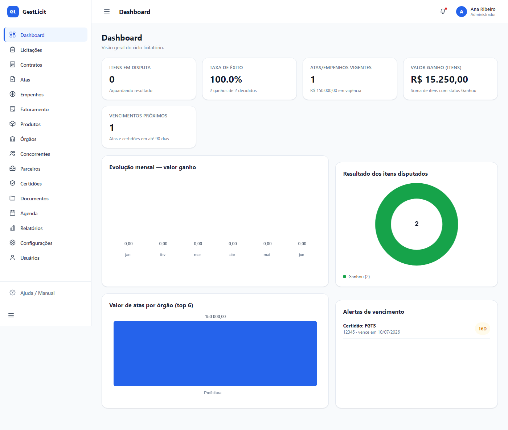
Seletor de período
No canto superior direito do cabeçalho há três abas que controlam a janela de tempo dos KPIs principais. Trocar o período não faz nova consulta ao banco — os dados já estão carregados e são filtrados em memória.
- Este mês
- Padrão ao abrir o dashboard. Mostra apenas dados cujas datas de referência estejam no mês e ano correntes.
- Este ano
- Acumula todos os dados do ano calendário corrente.
- Total
- Sem filtro de data — agrega tudo que existe no sistema.
KPIs do período
Bloco com borda azul à esquerda, logo abaixo do cabeçalho. Os cinco cartões respondem ao período selecionado.
- Pregões disputados
- Licitações únicas (por ID) em que participamos com pelo menos um item, filtrando pela data da sessão pública.
- Pregões ganhos
- Licitações únicas em que pelo menos um item saiu com status "Ganhou" no período. O rodapé mostra a taxa de êxito do período.
- Valor arrematado
- Soma do valor final × quantidade de todos os itens "Ganhou" com sessão no período.
- Faturado
- Soma do valor de faturas não canceladas cuja data de emissão cai no período.
- Recebido
- Soma dos recebimentos (parcelas pagas) cuja data de recebimento cai no período.
Visão geral · acumulado
Seção abaixo dos gráficos. Estes cinco KPIs são sempre totais históricos, independentemente do período selecionado.
- Em disputa
- Itens de licitação com status "Em disputa" agora — aguardando resultado.
- Taxa de êxito
- % de itens com resultado "Ganhou" sobre o total de itens decididos (todo o histórico).
- Atas vigentes
- Quantas Atas estão com situação "Vigente" hoje, e o valor total delas.
- Valor ganho
- Soma acumulada de todos os itens ganhos desde sempre.
- Em aberto
- Total de faturas não canceladas menos o que já foi recebido — o que ainda está a receber.
Gráficos e listas
- Evolução mensal
- Gráfico de barras com o valor ganho por mês nos últimos 6 meses (acumulado total, não filtrado pelo período selecionado).
- Resultado dos itens
- Rosca com a distribuição de status de todos os itens cadastrados.
- Alertas de vencimento
- Atas, Contratos e Certidões perto do vencimento — mesma lógica do sininho de notificações (90/60/30/15/7 dias).
- Faturas pendentes
- Faturas com saldo em aberto, ordenadas do maior para o menor, com barra de progresso do recebimento.
Minhas Participações
Painel analítico de desempenho nos pregões. Mostra, de forma consolidada, o que foi disputado e como foi o resultado — por período, UF e modalidade.
Filtros disponíveis
- Data início / fim
- Filtra pelos itens cuja licitação tem data de abertura (ou sessão) dentro do período. Padrão: 1º de janeiro do ano corrente até hoje.
- UF
- Filtra por estado da licitação.
- Modalidade
- Filtra por modalidade (Pregão Eletrônico, Dispensa etc.).
O que cada indicador significa
- Taxa de êxito (gauge)
- % de licitações vencidas sobre o total de licitações já decididas (ignora as que ainda estão "Em disputa"). Fica verde ≥50 %, amarelo ≥25 %, vermelho <25 %.
- Licitações disputadas
- Quantidade de editais únicos no período — e quantos deles tiveram pelo menos um item ganho.
- Itens ganhos
- Itens com status "Ganhou" sobre o total de itens com resultado definido. O percentual ao lado é o aproveitamento de itens.
- Valor arrematado
- Soma do valor final × quantidade de todos os itens ganhos no período. A linha inferior mostra o total participado (itens com qualquer status, inclusive "Em disputa").
- Arrematações por período
- Gráfico de barras com o valor arrematado por mês (data de abertura da licitação).
- Principais modalidades
- Ranking das modalidades com mais licitações disputadas no período.
- Participação por estado
- Tabela com total de licitações e vitórias por UF, e o % de êxito de cada estado.
- Desclassificações
- Lista de itens com resultado "Desclassificado" no período, com o motivo registrado.
Licitações
Cadastre cada edital que a empresa vai disputar (ou já disputou). É o módulo mais completo do sistema — cobre desde o recebimento do edital até o resultado final.
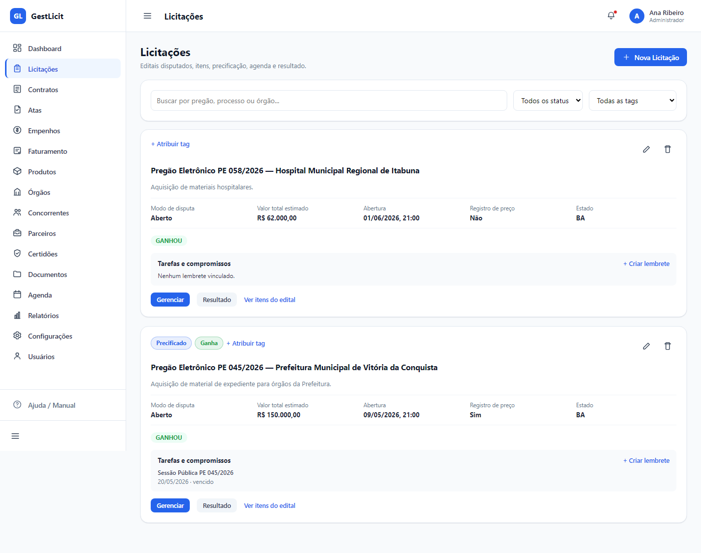
Cada licitação é um cartão: tags, status, lembretes da Agenda e os botões Gerenciar / Resultado / Habilitação / Monitorar / Ver itens.
Chips de fase
Acima dos filtros, há uma barra de chips coloridos que mostram a contagem de licitações por fase — derivada automaticamente dos itens cadastrados. Clique num chip para filtrar a lista; clique em Todas para voltar ao total.
- Todas
- Sem filtro de fase — mostra o total de licitações.
- Em disputa (azul)
- Licitações com pelo menos um item ainda com status "Em disputa" — sessão ainda em andamento.
- Ganhas (verde)
- Licitações com todos os itens decididos e pelo menos um com status "Ganhou".
- Perdidas (vermelho)
- Licitações com todos os itens decididos e nenhum "Ganhou" (Declinou, Desclassificado, Fracassado ou Revogado).
- Sem itens (cinza)
- Licitações cadastradas mas sem nenhum item de edital associado.
Filtros avançados
Painel de filtros logo abaixo dos chips — todos se acumulam entre si e com o chip de fase ativo. O contador "X de N licitações" aparece sempre que algum filtro estiver ativo.
- Buscar
- Busca por texto em: número do pregão, número do processo, nome do órgão e objeto do edital.
- UF
- Seletor dinâmico — lista apenas os estados que aparecem em pelo menos uma licitação cadastrada.
- Modalidade
- Filtra por modalidade (Pregão Eletrônico, Dispensa etc.).
- Órgão
- Seletor dinâmico — lista apenas os órgãos com licitações cadastradas, em ordem alfabética.
- Status do item
- Mostra licitações que tenham pelo menos um item com o status escolhido (ex.: "Ganhou").
- Tag
- Mostra licitações que tenham a tag escolhida atribuída.
- Abertura de / até
- Filtra pelo campo Data de abertura da licitação (ou Data da sessão quando a abertura estiver vazia).
- Habilitação
- Filtra pelo status de habilitação registrado no painel Habilitação.
- Monitoramento
- Filtra pelo status geral registrado no painel Monitoramento.
- Limpar
- Reseta todos os filtros e o chip de fase de uma vez.
1Dados gerais do edital
- Nº do Pregão *
- Obrigatório. O número que identifica o processo (ex.: PE 042/2026).
- Nº do Processo
- Número do processo administrativo do órgão, se diferente do número do pregão.
- Órgão
- Escolha o órgão comprador. Se ainda não existir, cadastre primeiro em Órgãos — o seletor só lista quem já está cadastrado.
- UF / Modalidade / Modo de Disputa
- Dados do edital. "Modalidade" é normalmente Pregão Eletrônico.
- Valor Total Estimado
- O valor estimado pelo órgão no edital. Deixe vazio se o edital marcar o valor como sigiloso.
- Registro de Preço?
- Marque "Sim" se o edital for para formar uma Ata de Registro de Preço (compra recorrente), e não um contrato fechado de uma vez.
- Exige Acervo Técnico?
- Marque "Sim" se o edital exige que o fornecedor comprove fornecimento anterior (habilitação técnica). Ao marcar, aparece o campo abaixo.
- % Mínimo do Acervo
- Só aparece quando "Exige Acervo Técnico?" estiver marcado. Informe o percentual mínimo exigido pelo edital (padrão: 50%). Exemplo: se o edital pede 100 unidades e exige 50% de acervo, o sistema vai verificar se o produto tem atestados de pelo menos 50 unidades.
2Datas, prazos e pregoeiro
- Abertura / Data e hora da Sessão Pública
- Quando o pregão acontece. Esses dois campos alimentam os lembretes da Agenda e o sininho de notificações.
- Validade da Proposta / Prazo de Entrega / Prazo de Pagamento
- Texto livre (ex.: "60 dias") — não precisam ser número puro.
- Nome / Telefone / Email do Pregoeiro
- Contato de quem conduz a sessão, para tirar dúvida durante a disputa.
- Endereços
- Campo livre para endereços de entrega ou retirada citados no edital.
3Itens do edital e precificação
Clique em "Adicionar item" para cada item do edital que a empresa vai disputar.
- Produto
- Selecione um produto já cadastrado em Produtos — é obrigatório, não existe opção de digitar o nome livremente. Ao escolher, o sistema já traz o custo e o fabricante cadastrados.
- Quantidade
- Quantidade do item pedida no edital.
- Valor de Referência
- O valor estimado do edital para aquele item específico. Deixe vazio se for sigiloso.
- Custo Unitário
- Vem do cadastro do produto, mas pode ser ajustado aqui se o custo mudou.
- Margem (%)
- Sua margem de lucro desejada. O Valor Mínimo é calculado automaticamente: custo × (1 + margem/100).
- Valor Inicial
- O valor que a empresa vai digitar na sessão para abrir o lance — você escolhe livremente, geralmente acima do Valor Mínimo.
- Acervo (coluna)
- Aparece somente quando a licitação está marcada como "Exige Acervo Técnico?". Mostra o status de cada item:
✅ — quantidade atestada no Acervo do Produto é suficiente para o percentual exigido;
⚠️ — existe atestado, mas a quantidade está abaixo do mínimo (exibe o total atestado);
❌ — nenhum atestado cadastrado para esse produto. O cálculo usa: qtd do item × % mínimo do acervo.
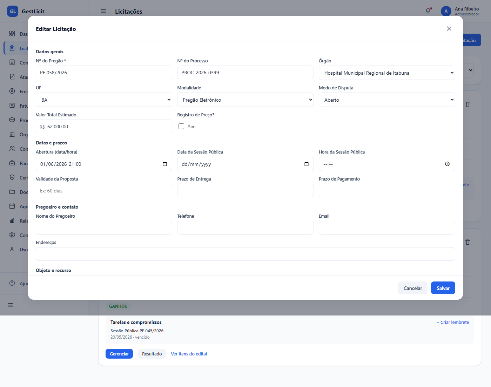
4Depois de salvar: tags, lembretes e resultado
A listagem de Licitações mostra cada uma como um cartão. Dentro do cartão:
- + Atribuir tag
- Rótulos coloridos livres (ex.: "Precificado", "Ganha") para organizar visualmente a lista. Pode criar tags novas direto ali.
- + Criar lembrete
- Cria um compromisso na Agenda vinculado a esta licitação (ex.: data de impugnação, data de recurso).
- Ver itens do edital
- Expande o cartão e mostra os itens cadastrados, só para consulta.
- Resultado
- Abre um modal separado da precificação. Para cada item, preencha o Lance Final e o Valor Arrematado (o que realmente fechou, seu ou do concorrente) e marque o Resultado (Ganhou, Declinou, Desclassificado, Fracassado, Revogado). Se foi uma perda, aparecem campos extras para apontar o Concorrente Vencedor e o Motivo da perda.
- Habilitação
- Abre o painel de habilitação desta licitação — veja detalhes no bloco Habilitação abaixo. O botão exibe um badge verde "Habilitado" ou vermelho "Inabilitado" quando o status já foi definido.
- Monitorar
- Abre o painel de monitoramento desta licitação — veja detalhes no bloco Monitoramento abaixo. O botão exibe um badge quando o status é "Encerrado" ou "Suspenso".
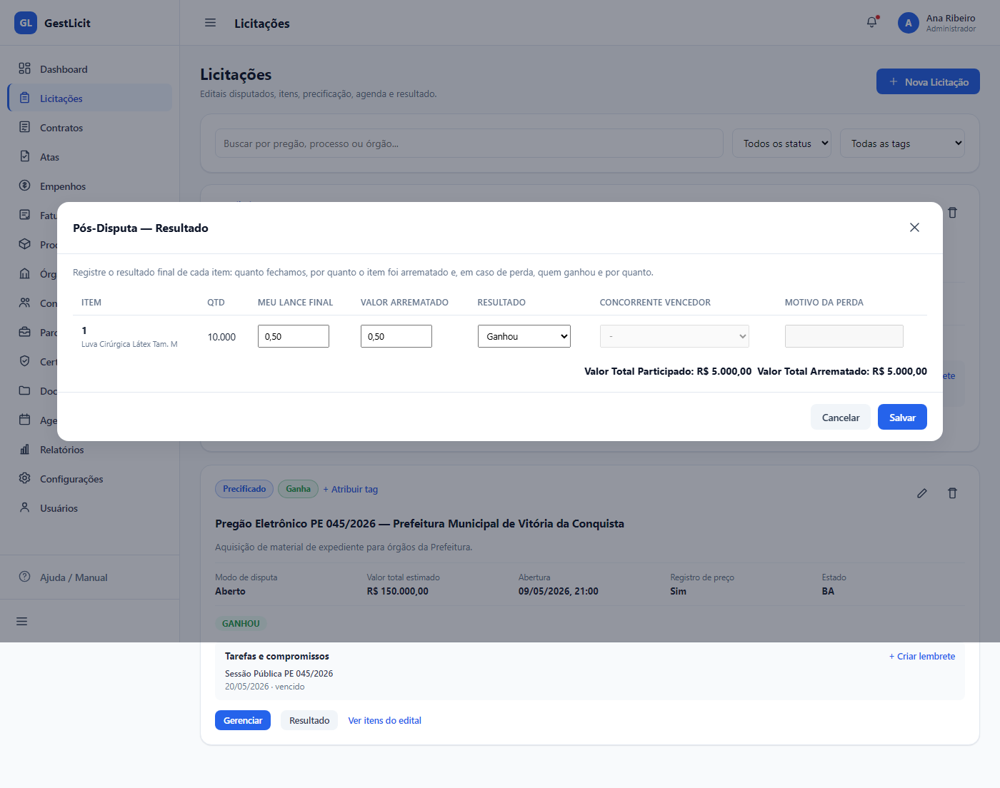
Habilitação
Registra a etapa de habilitação: se a empresa foi aprovada para participar da disputa e o que ocorreu durante o processo documental.
- Status da habilitação
- Aguardando (padrão) — ainda não há definição; Habilitado — empresa aprovada para participar; Inabilitado — empresa não aprovada. O status aparece como badge no cartão da listagem.
- Data da habilitação
- Quando a decisão de habilitação/inabilitação foi publicada ou comunicada.
- Impugnação
- Marque se houve impugnação ao edital. Um campo de observações se expande para registrar o motivo ou o resultado.
- Recurso
- Marque se a empresa (ou concorrente) interpôs recurso. Também expande um campo de observações.
- Observações gerais
- Campo livre para qualquer anotação sobre a fase de habilitação.
- Documentos exigidos
- Checklist dos documentos pedidos no edital. Adicione um a um; clique no checkbox para marcar como "Entregue" (riscado). Status possíveis: Pendente / Entregue / Dispensado (qualquer usuário pode marcar como Entregue; excluir exige permissão de escrita).
Monitoramento
Acompanha o andamento da licitação depois da sessão pública: status geral, tarefas pendentes e histórico de atualizações.
- Status geral
- Em andamento (padrão) — processo ainda em curso; Encerrado — processo finalizado; Suspenso — processo interrompido temporariamente. Encerrado e Suspenso aparecem como badge no cartão da listagem.
- Checklist de tarefas
- Lista de tarefas pendentes para esta licitação (ex.: "Enviar recurso", "Aguardar homologação"). Adicione uma descrição e clique "+ Adicionar". Marque o checkbox para concluir (texto riscado) ou desmarque para reabrir. A barra de progresso mostra o % concluído. Excluir uma tarefa é irreversível.
- Histórico de atualizações
- Registro cronológico de acontecimentos. Informe a data e uma descrição e clique "+ Registrar". Entradas mais recentes aparecem no topo. Ideal para anotar: "Sessão suspensa", "Impugnação acatada", "Homologado em X data" etc.
- Criar lembrete na Agenda
- Atalho para criar um compromisso na Agenda vinculado a esta licitação — útil para marcar prazo de recurso, data de homologação prevista etc. Abre o formulário de lembrete usual sem fechar o painel de Monitoramento.
Contratos
Use este módulo quando a licitação ganha vira um contrato formal assinado (em vez de — ou além de — uma Ata).
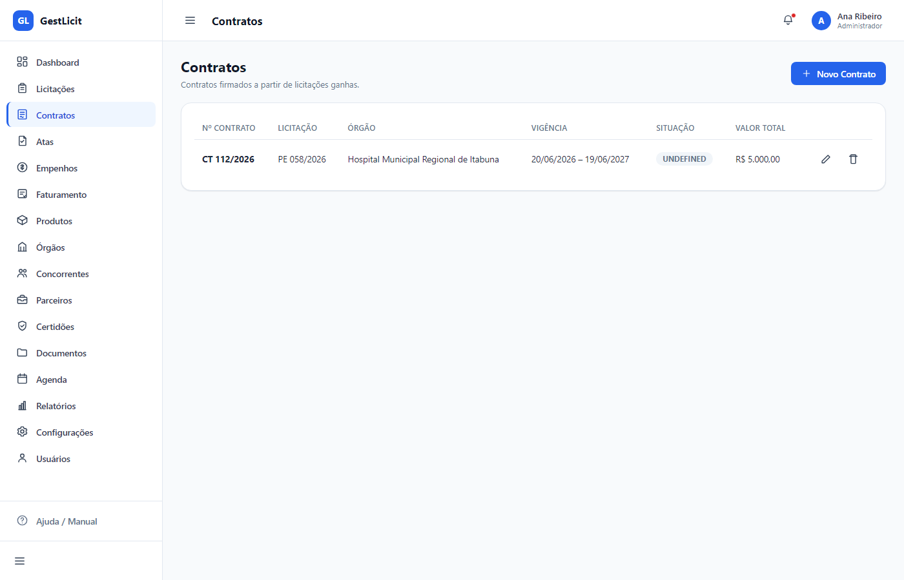
1Dados do contrato
- Nº do Contrato *
- Obrigatório.
- Licitação relacionada *
- Obrigatório — todo contrato precisa apontar para a licitação que o originou. Se a licitação ainda não existir, cadastre-a primeiro.
- Órgão
- Normalmente preenche solo ao escolher a licitação, mas pode ajustar.
- Valor do Contrato *
- Obrigatório — é o valor oficial assinado, que aparece na listagem (diferente da soma dos itens, que é só conferência).
- Vigência início / fim
- Datas que alimentam o alerta de vencimento (sininho e Dashboard).
- Viabilidade
- Viável / Inviável / Em análise — uso interno, sem efeito em cálculo.
- Arquivo do Contrato
- Envie o PDF assinado. Depois de salvo, fica disponível em "Ver arquivo atual".
2Prazos e contato
- Prazo de Entrega / Pagamento
- Texto livre + checkbox "Úteis" para indicar se a contagem é em dias úteis ou corridos.
- Telefone / Email
- Contato do órgão para tratar entregas e pagamentos.
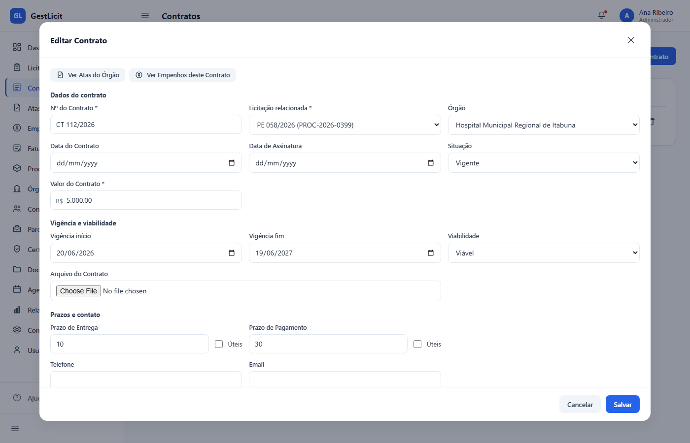
3Itens do contrato
Em vez de digitar item por item, use o botão "Carregar itens da licitação": ele traz automaticamente os itens já cadastrados na Licitação vinculada (produto, marca, modelo, quantidade e valor — usando o resultado da disputa se já existir). Depois é só ajustar o que for preciso.
Atas
Use quando a licitação ganha é um Registro de Preço: o órgão não compra tudo de uma vez, compra aos poucos, dentro de um limite, ao longo da vigência.
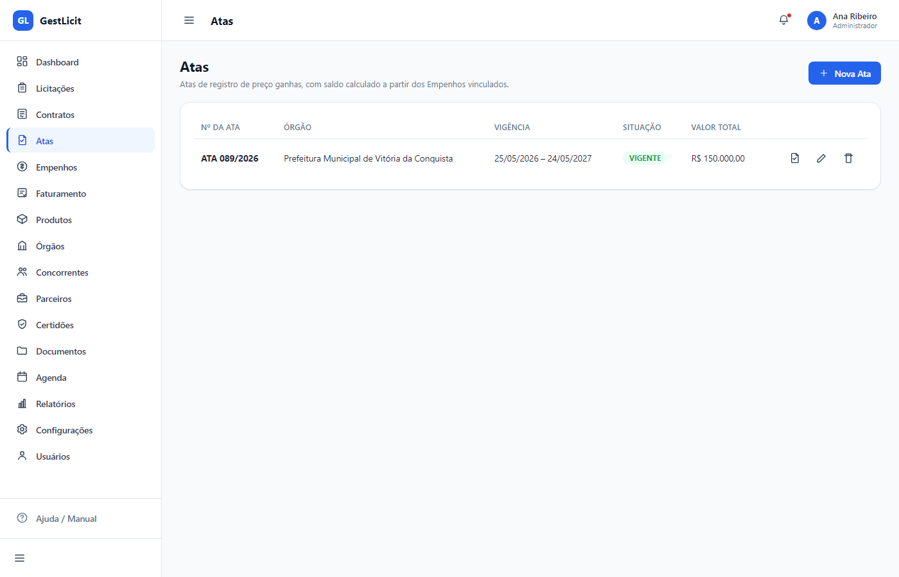
1Dados da Ata
- Nº da Ata *
- Obrigatório.
- Licitação relacionada
- Opcional (diferente do Contrato, que exige). Vincule se quiser rastrear a origem.
- Órgão / Data de Assinatura / Vigência início e fim / Situação / Valor Total
- Dados de cabeçalho. A Vigência fim alimenta o alerta de vencimento.
2Itens da Ata
Depois de salvar o cabeçalho, abra a Ata (ícone de itens) e clique em "Adicionar item": escolha o Produto (obrigatório), a Quantidade total registrada na Ata e o Valor unitário.
3Acompanhar o saldo
O saldo de cada item não se digita — é calculado automaticamente a partir de todos os Empenhos vinculados a esta Ata. A barra de progresso mostra "Empenhado X de Y". Para ver os empenhos que já consumiram o item, clique em "Empenhos vinculados".
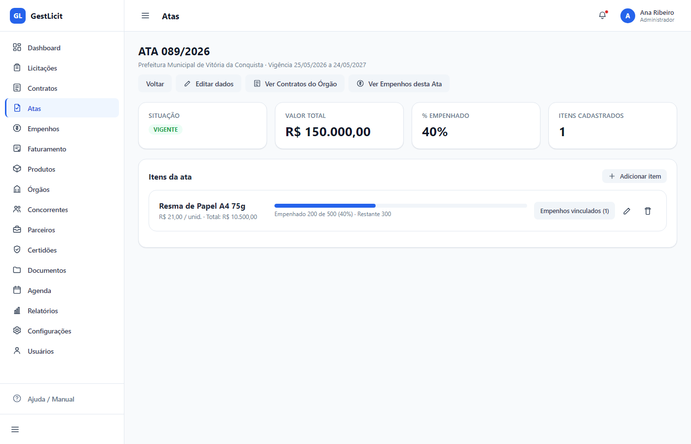
A tela de detalhe (não é um modal) mostra a situação, o valor total, o % já empenhado e o saldo de cada item.
Empenhos
Cada Empenho é um compromisso orçamentário oficial do órgão — o "pedido" formal de compra, que pode vir de uma Ata, de um Contrato, dos dois, ou ser direto (sem nenhum vínculo).
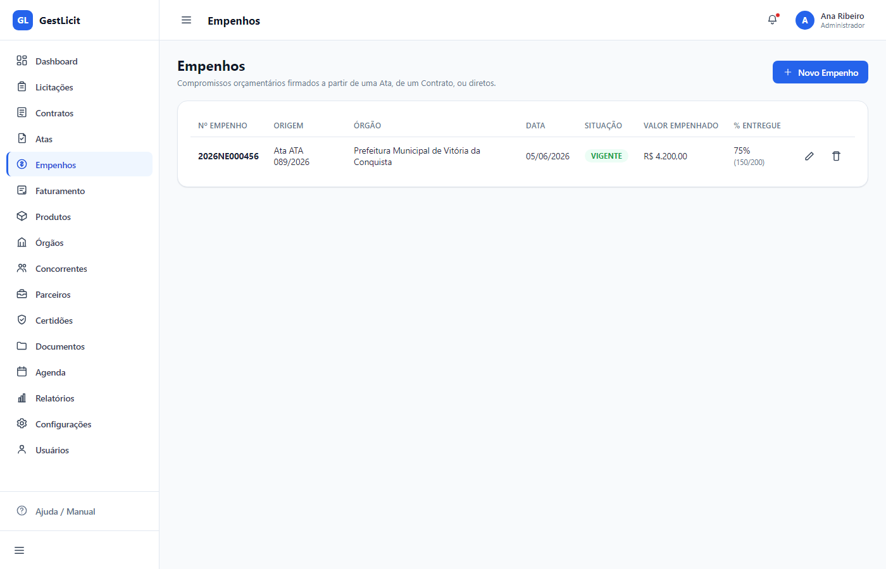
1Dados do empenho
- Nº do Empenho *
- Obrigatório (ex.: 2026NE000123).
- Ata vinculada / Contrato vinculado
- Escolha um, o outro, os dois ou nenhum. Ao escolher um, o campo Órgão se preenche solo.
- Valor Empenhado *
- Obrigatório — valor total do empenho.
- Arquivo do Empenho
- Envie o PDF/documento oficial do empenho, se tiver.
2Itens do empenho
Use "Carregar itens do vínculo" para trazer automaticamente os itens da Ata ou do Contrato selecionado (o que estiver preenchido). Ajuste a Quantidade Empenhada de cada item conforme o que está sendo pedido nesta vez — não precisa ser a quantidade total da Ata/Contrato.
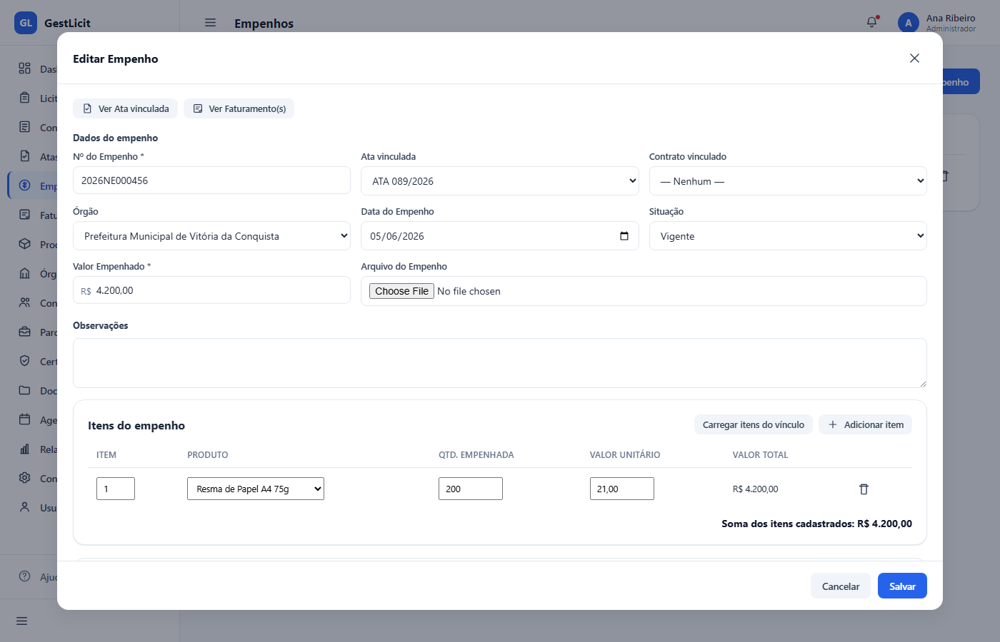
3Lançar entregas (só depois de salvo)
Depois que o Empenho está salvo com itens, aparece a seção "Saldo e entregas". Para cada item, clique em "Entregas" e lance: Data, Quantidade entregue, Nota Fiscal e observação. O saldo restante (Empenhado − Entregue) é calculado solo, nunca digitado.
4Gerar Atestado de Capacidade Técnica
Depois que um Empenho tem itens e entregas lançadas, o botão "Gerar Atestado" aparece no rodapé do modal (ícone de download). Ele gera automaticamente um arquivo .docx formatado com:
- Dados do órgão (nome, CNPJ, endereço, nome e cargo do responsável — vêm do cadastro do Órgão);
- Dados da empresa fornecedora (razão social, CNPJ, endereço — configurados em Configurações → Minha Empresa);
- Tabela com os fornecimentos realizados: uma linha por entrega (com NF e data), ou uma linha por item do empenho se as entregas ainda não tiverem sido lançadas.
Faturamento
Depois que uma Entrega do Empenho foi feita (com sua Nota Fiscal), registre aqui a Fatura enviada para pagamento e acompanhe os Recebimentos contra ela.
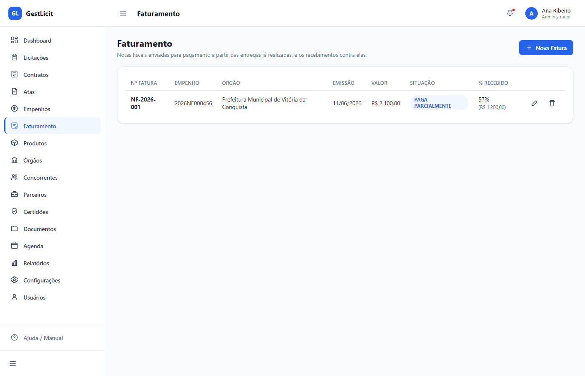
Situação (Aberta / Paga parcialmente / Paga) e % recebido são sempre calculados a partir dos Recebimentos — nunca digitados.
1Criar uma Fatura
- Empenho *
- Obrigatório. Depois de salva a fatura, esse campo trava — para não invalidar o vínculo com as entregas já marcadas.
- Entregas incluídas nesta fatura
- Marque uma ou mais Entregas já lançadas (com Nota Fiscal) daquele Empenho. Uma Entrega só pode estar em uma Fatura por vez — as que já foram faturadas em outra fatura não aparecem na lista.
- Usar valor sugerido
- Preenche o campo "Valor da Fatura" com a soma (quantidade × valor unitário) das entregas marcadas. É só uma sugestão — o valor final pode ser ajustado livremente.
- Nº da Fatura/NF *
- Obrigatório.
- Arquivo da Nota Fiscal
- Envie o PDF/XML da nota, se tiver.
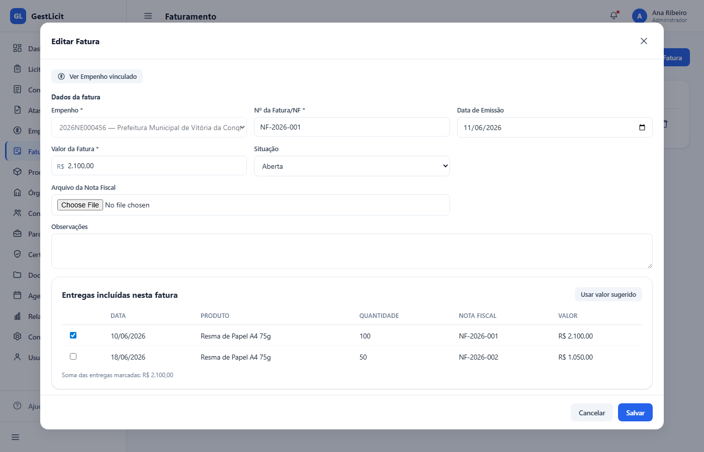
2Lançar Recebimentos
Depois que a Fatura está salva, abre a seção "Recebimentos" dentro do mesmo modal. Lance cada pagamento recebido (data, valor, forma) — pode ser parcelado em vários lançamentos. O saldo a receber e a situação da fatura são recalculados automaticamente a cada lançamento.
Produtos
Catálogo de produtos da empresa. Cadastre aqui antes de criar uma Licitação, Contrato, Ata ou Empenho — todos esses módulos exigem escolher um produto já cadastrado.
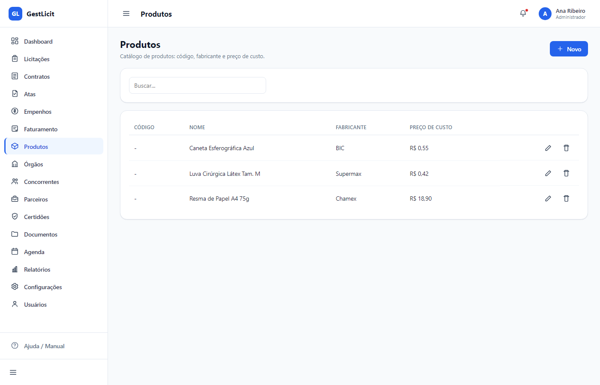
1Campos do cadastro
- Código
- Código interno do produto, se a empresa usa algum (ex.: código de outro sistema). Opcional.
- Nome do Produto *
- Obrigatório — é o que aparece nos seletores dos outros módulos.
- Fabricante
- Pré-preenche automaticamente a marca/fabricante quando o produto é usado num item de Contrato.
- Preço de custo
- Usado para calcular o Valor Mínimo na precificação da Licitação. Mantenha atualizado.
- Nomes similares
- Sinônimos separados por vírgula (ex.: nomes que o produto recebe em editais diferentes), só para facilitar a busca.
2Acervo Técnico
Alguns editais exigem que o fornecedor comprove ter fornecido, no passado, uma quantidade mínima daquele produto (chamado de habilitação técnica ou acervo técnico). O botão com o ícone de certidão em cada linha da listagem abre o painel de Acervo Técnico daquele produto.
- Total de unidades atestadas
- Soma de todas as quantidades atestadas cadastradas — o sistema calcula automaticamente.
- Adicionar Atestado
- Preencha: Data de Emissão, Quantidade Atestada (obrigatório), Órgão Emissor (nome livre do órgão que emitiu), Nº Empenho de Referência (para rastrear o fornecimento original) e, opcionalmente, envie o arquivo assinado (PDF ou imagem).
- Ver PDF
- Link para abrir o arquivo do atestado, quando foi enviado.
- Excluir atestado
- Disponível apenas para Administrador.
Órgãos
Prefeituras, autarquias e demais órgãos públicos com quem a empresa disputa. Cadastre antes de criar uma Licitação.
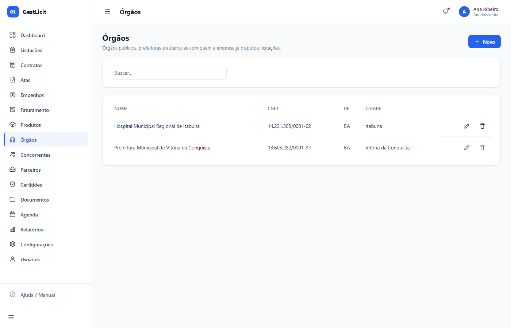
- Nome do Órgão *
- Obrigatório.
- CNPJ / UF / Cidade
- Dados de identificação, usados na busca da listagem.
- CEP
- Ao sair do campo, o sistema consulta o ViaCEP e preenche automaticamente Logradouro, Bairro, Cidade e UF — basta confirmar ou corrigir se necessário.
- Endereço (Logradouro, Número, Bairro, Complemento)
- Endereço completo do órgão — usado no corpo do Atestado de Capacidade Técnica gerado automaticamente a partir dos Empenhos.
- Responsável (Nome, CPF, Cargo, E-mail)
- Dados de quem assina o atestado pelo órgão. O e-mail é útil para contato direto com o responsável do órgão.
- Observações
- Texto livre — ex.: histórico de relacionamento, particularidades de pagamento.
Concorrentes
Empresas concorrentes nos pregões. Além do cadastro simples, este módulo tem uma ferramenta de consulta pública por CNPJ.
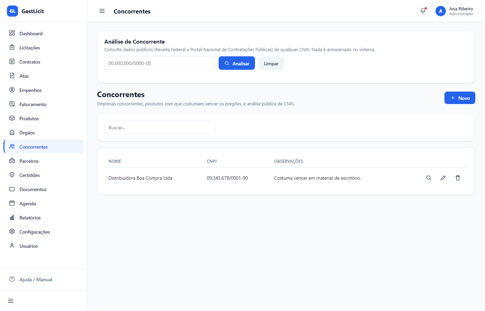
1Cadastro
- Nome da Empresa *
- Obrigatório.
- CNPJ
- Opcional, mas necessário se quiser usar o atalho "Analisar" na linha do concorrente.
- Produtos/observações
- Texto livre — anote com que produtos esse concorrente costuma vencer.
2Análise de Concorrente
Digite qualquer CNPJ no campo no topo da página e clique "Analisar" (ou use o ícone de lupa numa linha já cadastrada). O sistema busca, em tempo real e sem guardar nada no banco:
- Dados cadastrais da Receita Federal (razão social, sócios, situação, capital social);
- Contratos e empenhos públicos encontrados no Portal Nacional de Contratações Públicas (PNCP), com gráficos por modalidade e por UF;
- Sanções no CEIS/CNEP do Portal da Transparência (exige configurar uma chave de API gratuita em Configurações).
- Nova consulta
- Aparece junto ao resultado — limpa a busca para consultar outro CNPJ sem precisar rolar a tela até o topo.
- Limpar
- Ao lado do botão "Analisar" — limpa o campo e o resultado da tela.
- Exportar Excel
- Exporta a tabela de contratos/empenhos encontrados no PNCP.
Parceiros
Distribuidoras e revendas que representam a empresa em pregões — útil quando o item é vendido através de um parceiro, não diretamente.
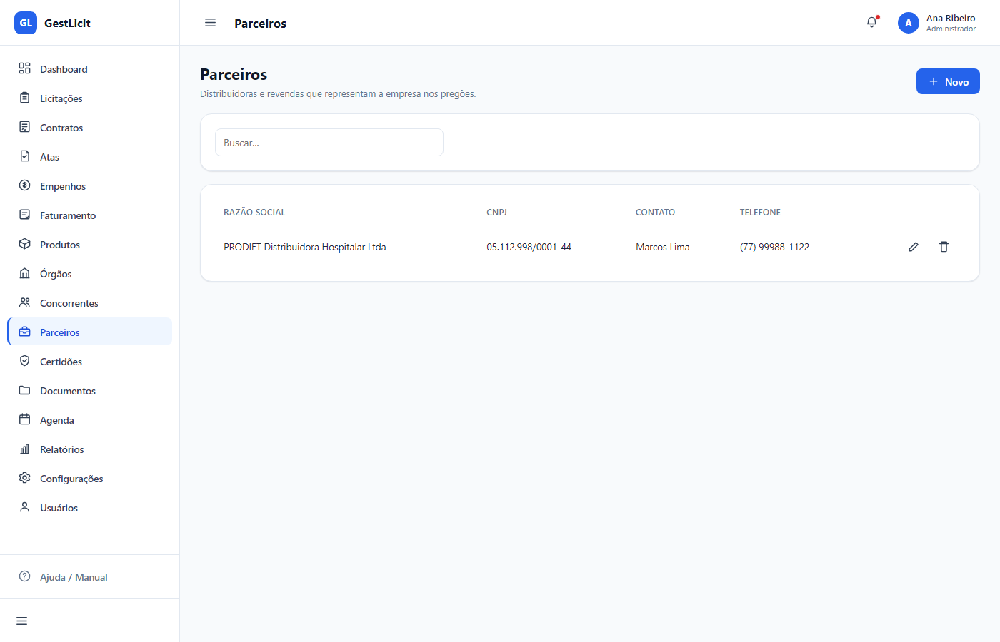
- Razão Social *
- Obrigatório.
- CNPJ / Contato / Telefone / E-mail
- Dados de contato comercial.
- Prazo de entrega / pagamento
- Mesmo padrão de Contratos: texto livre + checkbox "dias úteis".
Certidões
Documentos de regularidade fiscal e trabalhista da própria empresa (FGTS, Federal, Trabalhista etc.), exigidos para participar de pregões.
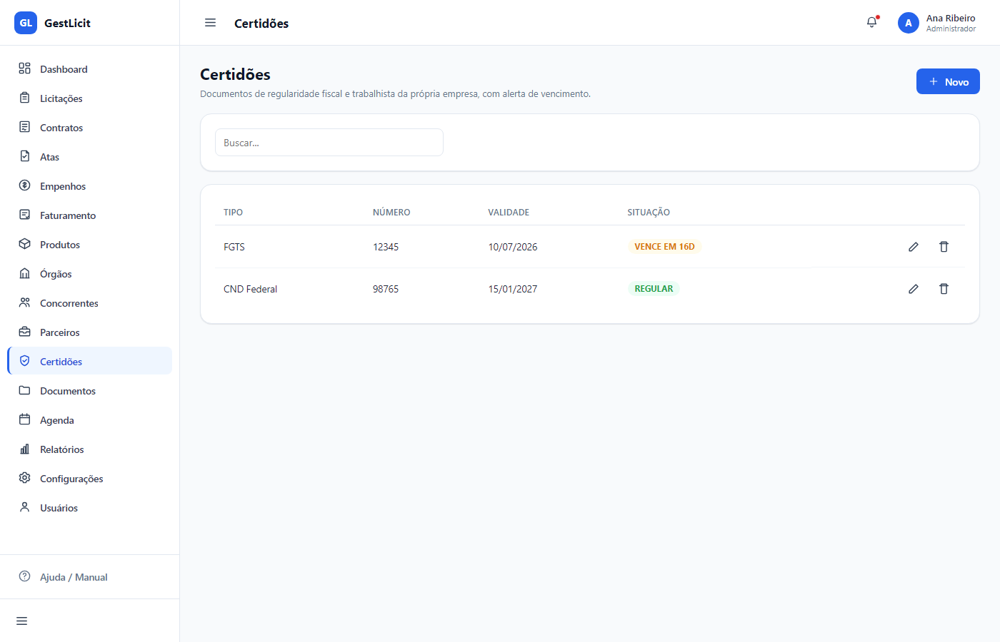
- Tipo de Certidão *
- Obrigatório — campo de texto livre com sugestões (FGTS, CND Federal, Trabalhista, Estadual, Municipal). Você pode digitar qualquer nome de certidão que não esteja na lista.
- Número
- Número de controle da certidão, se houver.
- Data de emissão / validade
- A validade alimenta o alerta de vencimento (sininho, Dashboard e Agenda).
- Iniciar renovação em
- Data em que o processo de renovação deve começar — que costuma ser anterior ao vencimento, já que certidões têm burocracia diferente para serem renovadas. Quando essa data se aproximar, o sininho de alertas dispara um aviso específico de "Renovar", separado do alerta de vencimento.
- Anexar arquivo
- Envie o PDF da certidão para ter sempre à mão na hora de montar uma proposta.
Documentos
Repositório central de arquivos — editais, propostas, atas assinadas, pareceres — sem precisar amarrar a um módulo específico.
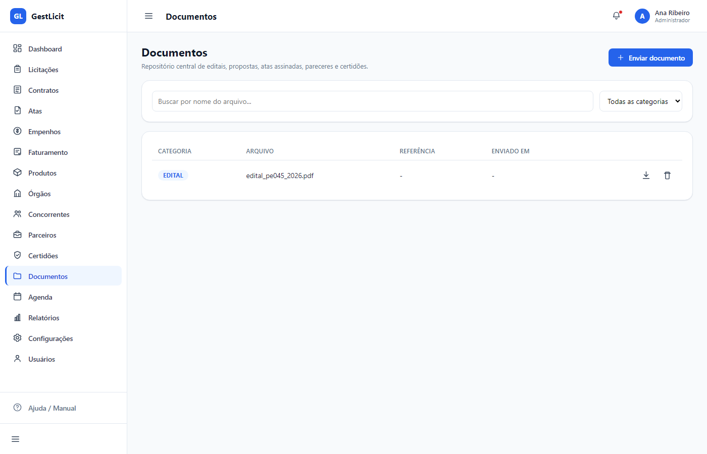
- Categoria *
- Classificação do arquivo, usada no filtro da listagem.
- Referência (opcional)
- Texto livre para lembrar a que se refere (ex.: "Pregão 042/2026").
- Arquivo *
- O arquivo em si — qualquer formato.
Use a busca por nome de arquivo e o filtro de categoria no topo da listagem para encontrar rápido.
Agenda
Calendário de compromissos do processo licitatório. Abre direto na visão de Mês, mas também tem Semana, Dia e Lista.
1Criar um compromisso
- Título *
- Obrigatório.
- Tipo
- Sessão Pública, Prazo de Recurso, Entrega, Outro etc. — define a cor no calendário.
- Data *
- Obrigatório.
- Lembrete?
- Marque para esse compromisso também aparecer no sininho de notificações quando a data estiver próxima.
2O que aparece no calendário
Além dos compromissos criados aqui, o calendário também mostra (sem precisar cadastrar nada): vencimento de Atas vigentes, de Contratos vigentes e de Certidões — cada um com uma cor diferente. Clicar num evento de vencimento leva direto para o módulo correspondente.
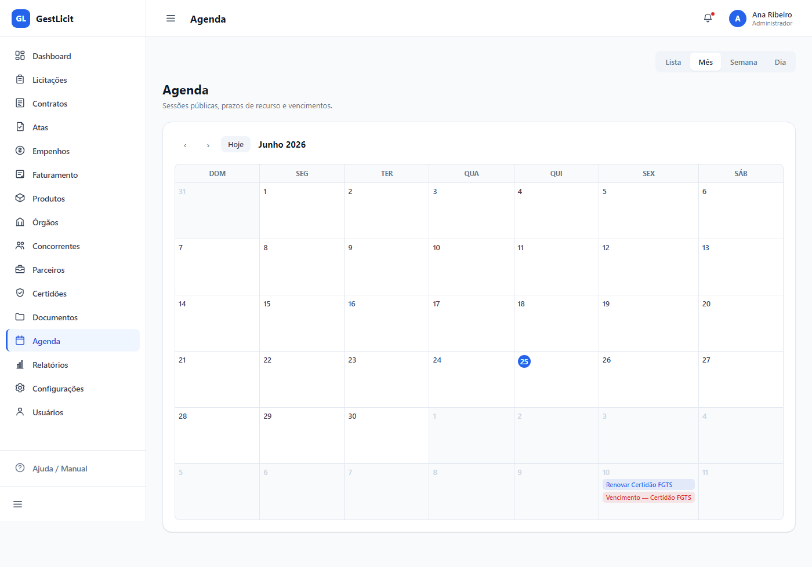
Sininho de alertas
O ícone de sino no topo da tela mostra, num só lugar, tudo que está prestes a vencer ou que foi marcado como lembrete: Atas, Contratos e Certidões vencendo (90/60/30/15/7 dias), alertas de renovação de Certidões (campo "Iniciar renovação em") e lembretes de Agenda.
- Marcar como lido
- Clique no ícone de check ao lado de qualquer alerta para dispensá-lo da lista. Isso vale só para você — outros usuários continuam vendo o alerta normalmente.
- Alertas já vencidos
- Itens já vencidos ("Vencido") sempre aparecem, mesmo que tenham sido marcados como lidos antes — não é possível silenciar de vez algo que já passou do prazo.
- O alerta "volta"?
- Sim, se a data do registro mudar (ex.: renovou a Ata com nova vigência) — aí é um alerta novo, ainda não lido.
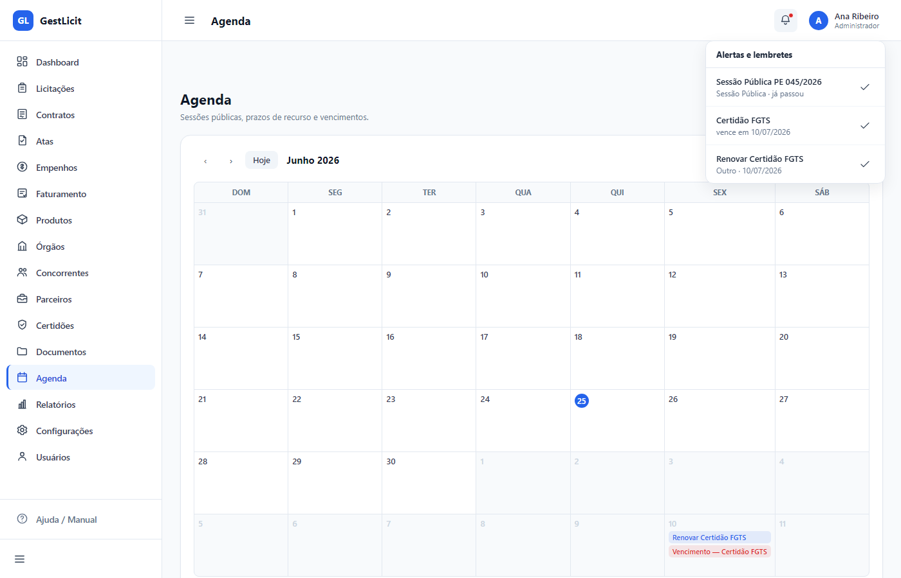
Relatórios
Exportações em Excel (e PDF, no caso de Resultado mensal) — não tem cadastro, só botões de exportar.
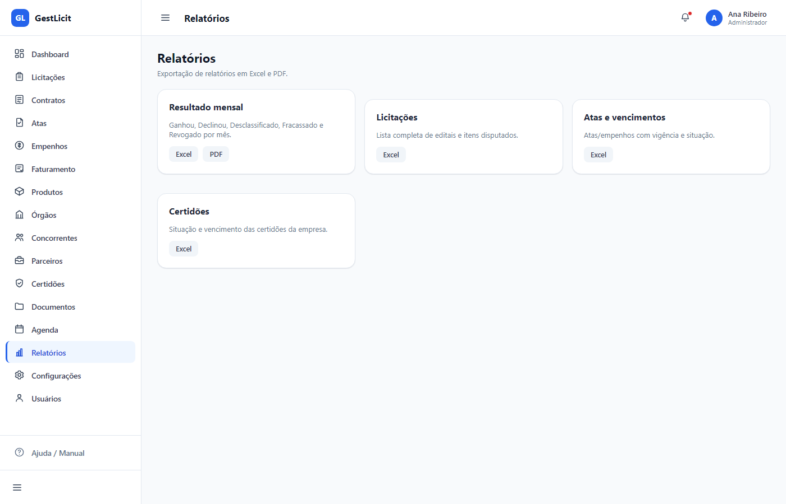
- Resultado mensal
- Ganhou / Declinou / Desclassificado / Fracassado / Revogado, agrupado por mês, a partir da data da sessão.
- Licitações
- Lista completa de editais e itens disputados.
- Atas e vencimentos
- Atas com vigência e situação atual.
- Certidões
- Situação e vencimento de cada certidão da empresa.
Usuários
Só quem é Administrador vê este módulo. É aqui que se cria login para a equipe — não existe mais cadastro pela tela de login.
1Criar um usuário novo
- Nome / E-mail / Senha provisória *
- Obrigatórios. A pessoa pode trocar a senha depois de entrar (combine isso fora do sistema).
- Perfil de acesso
- Administrador tem acesso a tudo, sem restrição. Usuário só vê as páginas marcadas abaixo.
- Páginas liberadas
- Só aparece para perfil "Usuário" — marque cada página do menu que essa pessoa pode acessar.
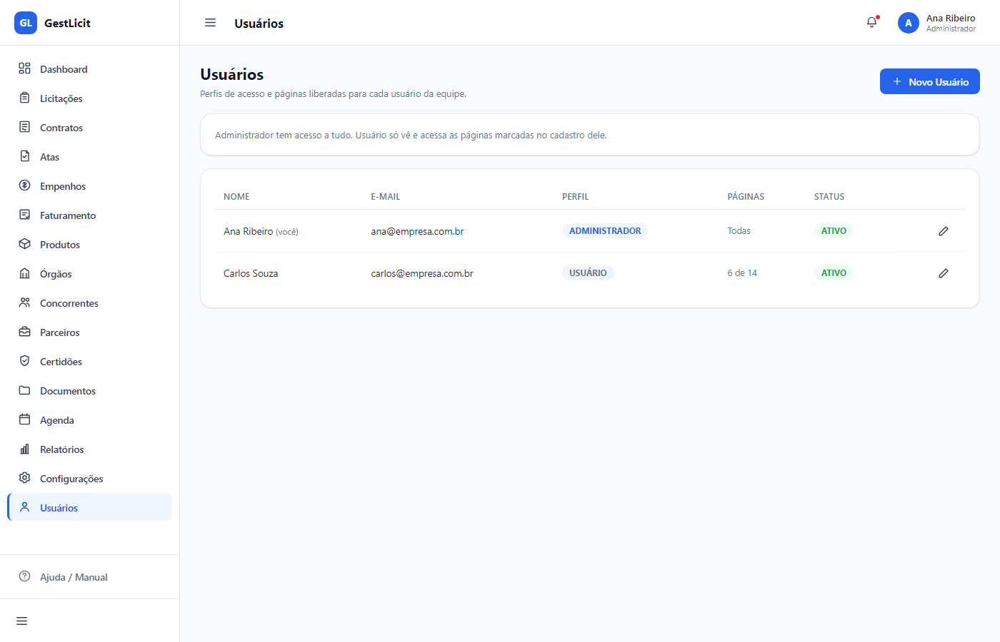
2Editar um usuário existente
Clique no ícone de editar na linha do usuário para trocar nome, perfil, páginas liberadas, ou marcar como "Inativo" (sem precisar excluir o login).
Configurações
Dados da empresa, integrações externas e dados de demonstração — acessível a qualquer usuário com permissão de escrita, não só Administrador.
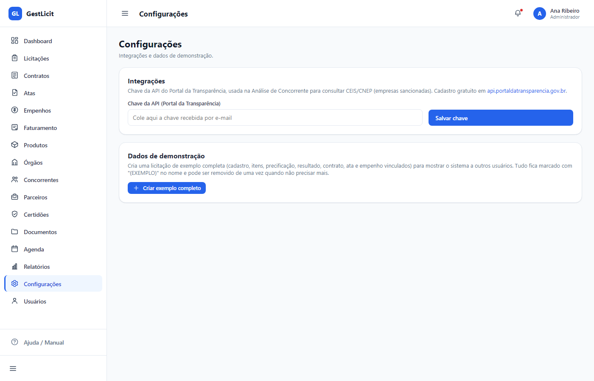
1Minha Empresa
Dados do fornecedor que aparecem no Atestado de Capacidade Técnica gerado automaticamente a partir dos Empenhos. Preencha uma vez e ficará salvo para todos os atestados futuros.
- Razão Social *
- Obrigatório para salvar. Nome completo da empresa conforme o CNPJ.
- CNPJ
- A formatação XX.XXX.XXX/XXXX-XX é aplicada automaticamente enquanto você digita.
- Inscrição Estadual
- Texto livre — formatos variam por estado.
- Telefone / E-mail / Nome do Contato
- Dados de contato comercial da empresa.
- CEP
- Ao sair do campo, o sistema consulta o ViaCEP e preenche automaticamente Logradouro, Bairro, Cidade e UF.
- Endereço completo
- Logradouro, número, complemento, bairro, cidade, UF — usados no corpo do Atestado.
- Responsável Legal (Nome e CPF)
- Pessoa que assina documentos em nome da empresa. O CPF é formatado automaticamente (XXX.XXX.XXX-XX) enquanto digita.
2Integrações
- Chave da API (Portal da Transparência)
- Necessária para a seção de Certidões CEIS/CNEP funcionar dentro da Análise de Concorrente. Cadastro gratuito em
api.portaldatransparencia.gov.br.
3Dados de demonstração
Cria, com um clique, uma licitação de ponta a ponta (com o sufixo "(EXEMPLO)" no nome) para mostrar o sistema a alguém sem usar dados reais. "Remover dados de demonstração" apaga tudo de uma vez. Esta segunda ação é só para Administrador.